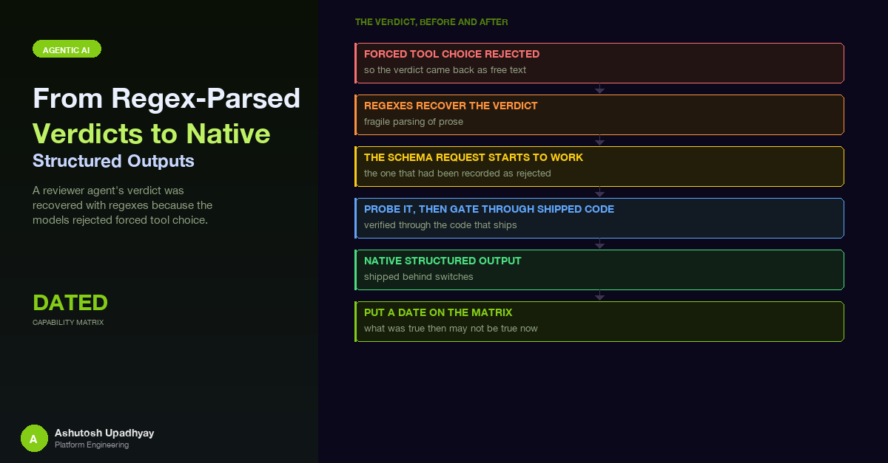

A reviewer agent's verdict was recovered with regexes because the models rejected forced tool choice. Then the schema request I had recorded as rejected started to work. What I shipped, how I probed it, and why a capability matrix needs a date on it.
In late September I sent the same Converse request to four Claude 5.x models on Amazon Bedrock. The request carried a textFormat JSON schema inside outputConfig, and all four answered with a validation error: output_config.format: Extra inputs are not permitted. I wrote that result into the refusal post as a row in a table, and concluded that on the 5.x tier there was no supported way to make the model emit a schema, so the answer was prose plus a parser.
On 20 October I sent the same field again, against two of those models, and valid JSON came back. An AWS announcement about structured outputs for Claude models on Bedrock was dated the day before. I cannot tell you what changed on the service side, only that a row in my own published table had stopped being true.
This post is about what I built once it was true: a reviewer agent whose verdict used to be recovered by regex now comes back as schema-constrained JSON, with thinking intact, behind a switch that falls back to the old path. It is also about the part I would stress most. The expensive mistake here would not have been a bug in the parser. It would have been trusting a table that was three weeks old.
The short version. The Converse outputConfig.textFormat request was rejected on Sonnet 5, Sonnet 5.5, Opus 5 and Opus 5.5 in late September, and accepted on the models I re-probed in the third week of October. A capability matrix is a dated measurement. Re-probe it before you build on it, and again before you build on someone else's copy of it, including your own old blog post.
The reviewer agent sits at the end of a research pipeline. It reads a synthesised answer and the tool evidence behind it, and returns a verdict (pass, pass with caveats, needs revision, reject), a grounding status, lists of unsupported claims, and a short summary. Downstream code branches on the verdict, and a pass-with-caveats adds a caveat line to the answer.
The first structured version used the framework's structured-output feature. In Strands Agents you pass a Pydantic model, the framework exposes it to the model as a tool, and if the model ends its turn with plain text instead of calling that tool, the framework forces the call on the next request by setting a tool choice. That last step is the problem. My probes in late September showed that forced tool choice is rejected on these models. The error is a 400:
ValidationException: tool_choice: type "tool" and "any" are not supported for this model.So the structured-output feature worked exactly when it was not needed. If the model called the tool on its own, you got a validated object. If it answered in prose, the framework reacted by sending the one request the model rejects, and the prose answer surfaced as an exception wrapped inside the framework's event-loop exception.
The shipped workaround was recovery. Catch that failure, look through the exception chain for the validation error, then walk the conversation backwards for the newest assistant message that is text-only and carries a verdict line, and parse it with one hardened parser. A few rules in that parser were worth the effort:
It worked, and every run was counted by how its verdict was obtained. But it was a parser for a failure mode, and every such parser is a place where a model's formatting choice becomes your bug.
The published row in the refusal post said the Converse text-format option was rejected on the 5.x tier. That was an accurate record of what I measured in late September. It was also being used, by me, as a reason not to look again. When the AWS structured-outputs announcement appeared, it was a source worth three minutes of re-checking. I ran the probe with the same schema shape I had intended to use, against the two primary models the pipeline calls:
| Model | Late September | Around 20 October |
|---|---|---|
| Opus 5.5 | Rejected | Accepted: valid JSON on 3 of 3 cases, reasoning block present on 3 of 3 |
| Sonnet 5.5 | Rejected | Accepted: valid JSON on 3 of 3 cases (the probe response carried no reasoning block) |
| Opus 5 | Rejected | Accepted in a follow-up probe: valid JSON with a reasoning block |
| Sonnet 5 | Rejected | Not re-probed |
| Sonnet 4.6, Haiku 4.5 | Accepted | Not re-probed |
The last two rows are the honest part of the table. I only know about the models I asked again. If I had updated the post by rewriting "rejected" to "accepted" across the board, I would have replaced one stale generalisation with another.
A capability matrix is a measurement with a date. Model cards, release notes and your own probe notes all describe a moment. The Opus 5.5 model card still listed structured outputs as unsupported when I checked it in early October, and a request the service rejected in September was being accepted in the third week of October. Put the probe date next to every entry, and treat anything older than your last model or SDK change as a hypothesis.
If you read the refusal post in the last few weeks, its structured-output row describes the late-September result. This post is the update.
The mechanism is constrained decoding. You give the service a JSON schema, and it restricts which tokens the model may emit so that the final text is guaranteed to parse against that schema. The Converse API exposes it as outputConfig.textFormat with a jsonSchema structure. The schema has to be in a strict subset, and the AWS documentation page I worked from lists the rules that mattered to me:
additionalProperties: false on every object.minimum / maximum, minLength / maxLength or oneOf.max_tokens can still produce output that does not conform.That last bullet shapes the whole design. "Guaranteed to parse" has two asterisks: the model can decline, and the model can run out of tokens in the middle of an object. Both of those are normal outcomes for a reviewer that thinks before it answers, so the code that reads the result still needs a plan for non-conforming text. I come back to that below.
The request itself is small:
response = bedrock.converse(
modelId=MODEL_ID,
system=[{"text": SYSTEM_PROMPT}],
messages=[{"role": "user", "content": [{"text": TASK}]}],
outputConfig={
"textFormat": {
"type": "json_schema",
"structure": {"jsonSchema": {
"name": "ReviewVerdict",
"description": "The reviewer's verdict",
"schema": json.dumps(strict_schema), # a JSON string, not a dict
}},
}
},
)Two details are easy to miss. The schema goes in as a JSON-encoded string, not a nested object. And the Pydantic model's own JSON schema is not in the strict form out of the box, so I ran it through the framework's strict-schema helper, which converts it to the form Bedrock accepts. Strands passes extra keyword arguments to the Converse request, so the same dictionary rides along on the model object:
model = BedrockModel(
model_id=MODEL_ID,
additional_args={"outputConfig": output_config}, # lands at the top level of the Converse request
)
agent = Agent(model=model, tools=tools)
result = agent(prompt) # note: no structured_output_model argumentThe last line is the point. Leaving out structured_output_model means the framework never enters its forced-tool mode, so the 400 from the previous section cannot happen. The schema applies to the model's final text turn.
The probe used three reviewer cases: a well-supported synthesis, one that overreached beyond its evidence, and one with a fabricated citation. All ran at high effort. I was looking at four things.
The same field also worked on the older model I use as the refusal fallback, on the streaming Converse API (the one the agent framework uses), and alongside a prompt-cache checkpoint, where a repeat call read the cached prefix the first call wrote. The refusal path is covered in the refusal post.
"Thinking kept" is a claim I only make for this path, and only as far as the runs go. It does not carry over to a differently shaped request just because the schema is the same.
The probe used a toy prompt and a script. The reviewer in production has a real prompt, a real tool list, a refusal fallback and a framework wrapper between my code and Bedrock. A probe proves the service accepts the shape. It does not prove my code builds that shape.
So before enabling anything I ran a gate that went through the shipped code path, the same run function and model-building hook the service uses, with a handful of live calls:
The prompt needed a rewrite for the new path: the old prompt told the model to call a dedicated review tool, which in schema mode names a tool that does not exist. That is the kind of failure a script-level probe cannot see.
"The output is guaranteed to parse" is a statement about the happy path. The reader of the output is still code, and it still needs defined behaviour for everything else. The schema-path reader is a short ladder, tried in order:
def read_review(text):
stripped = strip_code_fence(text)
# 1. The schema held: validate it, render it to the labelled text downstream expects.
try:
review = ReviewVerdict.model_validate_json(stripped)
return "structured", review, render(review)
except ValidationError:
pass
# 2. Truncated or invalid JSON: the verdict is the FIRST field in the schema,
# so a regex can still read it from a cut-off object.
if (v := first_json_verdict(text)) in ALLOWED_VERDICTS:
return "text_recovered", None, labelled(v, text)
# 3. Prose that happens to carry labelled lines: the old hardened text parser.
if parse_labelled_verdict(text) in ALLOWED_VERDICTS:
return "text_recovered", None, text
# 4. Nothing readable. Never hand raw JSON downstream as if it were a review.
return "failed", None, UNAVAILABLE_PREFIX + one_line(text)Four choices in there deserve a sentence each.
Order the schema fields for failure. The verdict is the first field. A response cut off by max_tokens is the likeliest non-conforming output from a thinking model, and with the verdict first, a truncated object still contains the one value downstream code branches on. The reasons behind that failure mode, thinking tokens spending the same budget as the answer, are in the Opus 5 migration post.
Refusals are not parsed. If the stop reason is a refusal, a content filter or a guardrail intervention, the text is not a review even if it contains the word "reject". The run is counted as failed and the caller's refusal handling reads the stop reason, which is the whole argument of the refusal post.
Be lenient on formatting, strict on vocabulary. The validators accept "PASS WITH CAVEATS" or "partial" and normalise them before the allowed-values check, and they cut an oversized field, with a visible truncation marker, instead of rejecting it. Both rules exist for one reason: a validation failure makes the framework feed the error back to the model and retry, which costs time and money to fix a cosmetic problem. The constrained decoder guarantees the shape. It cannot guarantee the business rules, because the strict subset has no minimum, maximum or length. Ranges live in the Pydantic model, where a bad value can be clamped or dropped instead of failing the call.
The output still reads like the old output. The reviewer service renders the validated object back into the labelled-section text that the rest of the pipeline has always consumed, and adds the structured object as an extra key on the result. During a rolling deploy an old caller ignores the extra key and an upgraded caller reading an old pod's text uses the parser. No existing field changes shape, so mixed-version fleets keep working.
The new path is on only when three things are all true: a master switch is on, the mode is set to schema (the alternative is the tool path), and the per-model catalog says the model about to be built has a probed Converse schema path. One function answers that question, and it is called twice with the same model id: when the model object is built, and when the run starts.
def schema_path_active(model_id: str) -> bool:
try:
return (settings.enabled
and settings.mode == "schema"
and catalog.supports(model_id, api="converse"))
except Exception:
return False # a broken check means "use today's path", never a failed callEverything about that function is deliberately boring:
The counter that records how each verdict was obtained gained one dimension, the path (schema or tool), next to the existing outcome. Adding a dimension to a CloudWatch metric starts a new series; the old single-dimension series simply stops receiving data. Before shipping I checked that no alarm or dashboard was reading the old series. The general point is worth making explicit: a harmless-looking extra label breaks any query that filtered on the old label set, and the break is silent.
The strict subset has no free-form objects, and that limit showed up in two places.
The first was a planner that asks the model for a multi-step plan, where each step has a params field: a dictionary of arbitrary parameters for whichever tool the step names. A free-form dictionary cannot be expressed in the strict subset. The schema I shipped declares params as a string whose description says "the tool parameters as a JSON object encoded as a string", and the reader decodes that string back into a dictionary after validating the rest. If the schema reading does not hold (a fenced reply, a truncated one, a string that does not decode), the old parse of the same text runs. The schema path can therefore only add successes. A short addendum tells the model how to fill the field, and is added to the prompt only while the schema is active for the model being built.
The second was a different feature, which I only observed. When I enabled the framework's strict mode on tool definitions for a full tool list, Bedrock rejected the request with a 400 naming the first tool that had a free-form dictionary parameter: additionalProperties: true not supported. Same subset, same limit, reached from the tool side instead of the output side.
Where free-form data goes. Anything in a constrained-decoding schema must have a declared shape. Where the shape is genuinely open, encode it as a string and decode it yourself, or leave it out of the schema and keep an unconstrained fallback parse. Do not make an open field look typed just to satisfy the validator.
| Tool call plus recovery | Schema in the request | |
|---|---|---|
| Primary mechanism | Model calls a tool, framework validates | Constrained decoding on the final turn |
| Plain-text answer | Triggers a forced tool choice, which the model rejects (400) | Constrained to the schema on the final turn |
| Where regexes still run | Every time the model answers in prose | Truncated or otherwise non-conforming final text (refusals are read by stop reason, not parsed) |
| Thinking | Present | Present on Opus 5.5 (3 of 3, then 4 of 4 through the shipped code) |
| Output size | Longer prose | JSON, plus a fixed schema overhead on input |
| Rollback | n/a | One mode switch and a restart |
The regex did not disappear. It moved from the main path to the edges, and a counter says how often each rung is used, so a model update that starts truncating shows up as a shift in rung distribution rather than a vague complaint about verdicts.
Disclaimer: The views and opinions expressed in this post are my own and do not represent those of my employer or any organisation I am associated with.